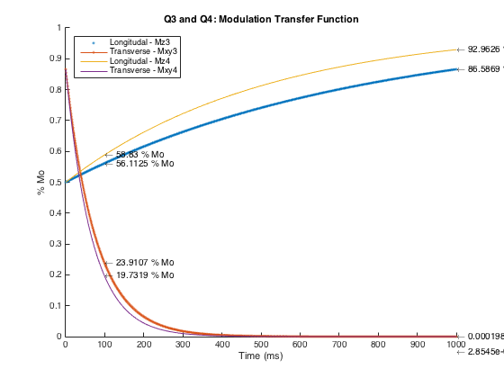

clc, clear all, close all
disp('Question 3')
T13 = 760;
T23 = 77;
alpha = pi/3;
Mo = 1;
t = linspace(0,1000, 1000);
Mz3 = Mo*(1 + (cos(alpha)-1)*exp(-t/T13));
Mxy3 = Mo*sin(alpha)*exp(-t/T23);
figure, hold all, plot(t, Mz3,'.', t, Mxy3, '.-')
tarray = [100, 1000];
bump = [0,0.05];
disp('Longitudal - Mz')
for (i = 1:2)
str = ['\leftarrow ' num2str(Mz3(tarray(i))*100) ' % Mo'];
text(tarray(i), Mz3(tarray(i)), str)
disp(['Percent relaxation at t = ' num2str(tarray(i)) 'ms is ' num2str(Mz3(tarray(i))*100) '%'])
end
disp('Transverse - Mxy')
for (i = 1:2)
str = ['\leftarrow ' num2str(Mxy3(tarray(i))*100) ' % Mo'];
text(tarray(i), Mxy3(tarray(i)), str)
disp(['Percent relaxation at t = ' num2str(tarray(i)) 'ms is ' num2str(Mxy3(tarray(i))*100) '%'])
end
disp('Question 4')
T14 = 510;
T24 = 67;
Mz4 = Mo*(1 + (cos(alpha)-1)*exp(-t/T14));
Mxy4 = Mo*sin(alpha)*exp(-t/T24);
plot(t, Mz4, '-', t, Mxy4)
title('Q3 and Q4: Modulation Transfer Function')
xlabel('Time (ms)'), ylabel('% Mo')
legend('Longitudal - Mz3', 'Transverse - Mxy3','Longitudal - Mz4', 'Transverse - Mxy4', 'Location', 'NorthWest')
disp(' ')
disp('Longitudal - Mz4')
for (i = 1:2)
str = ['\leftarrow ' num2str(Mz4(tarray(i))*100) ' % Mo'];
text(tarray(i), Mz4(tarray(i)), str)
disp(['Percent relaxation at t = ' num2str(tarray(i)) 'ms is ' num2str(Mz4(tarray(i))*100) '%'])
end
disp('Transverse - Mxy4')
for (i = 1:2)
str = ['\leftarrow ' num2str(Mxy4(tarray(i))*100) ' % Mo'];
text(tarray(i), Mxy4(tarray(i)) - bump(i), str)
disp(['Percent relaxation at t = ' num2str(tarray(i)) 'ms is ' num2str(Mxy4(tarray(i))*100) '%'])
end
Question 3
Longitudal - Mz
Percent relaxation at t = 100ms is 56.1125%
Percent relaxation at t = 1000ms is 86.5869%
Transverse - Mxy
Percent relaxation at t = 100ms is 23.9107%
Percent relaxation at t = 1000ms is 0.00019831%
Question 4
Longitudal - Mz4
Percent relaxation at t = 100ms is 58.83%
Percent relaxation at t = 1000ms is 92.9626%
Transverse - Mxy4
Percent relaxation at t = 100ms is 19.7319%
Percent relaxation at t = 1000ms is 2.8545e-05%
